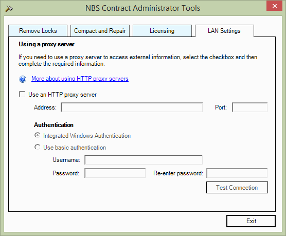

Some companies can block access to use NBS Contract Administrator's online updating function and online Manufacturers Information - fortunately there is a way to bypass this where they can enter their own proxy server details.
PLEASE NOTE: Proxy Server details should only be set by the System Administrator of the company.
NBS Contract Administrator comes with a side program called NBS Contract Administrator Tools - this is a separate window where the user can Remove Locks on a Job, Compact and Repair the datastore that fails to open upon startup, launch the Licence viewer, and adjust the LAN Settings.
To access the LAN Settings, go to Start > All Programs > NBS > NBS Tools > NBS Contract Administrator Tools and select the LAN Settings tab.

Tick the check box for 'Use a HTTP proxy server' and enter the company's IP address and Port number. To verify that the details are correct, select the Test Connection button - one of the following messages will explain the status of the connection:
If the proxy settings are the same as the Windows Authentication then select the Integrated Windows Authentication option, alternatively enter the appropriate proxy authentication details in the username and password fields.
See also:
Tools - Remove Locks
Tools - Compact and Repair
Tools - Licence Viewer